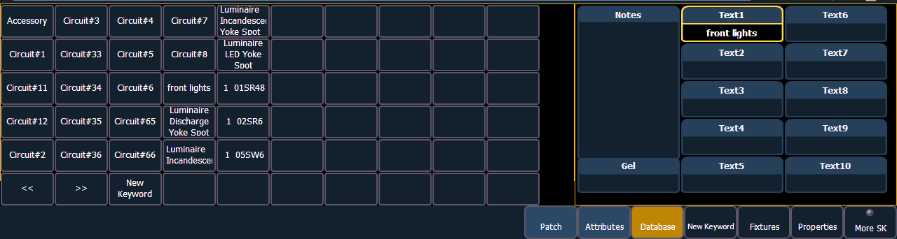

The {Database} page provides you with additional fields for entering information that can be used by the Query function. See Using {Query} . These fields include {Notes} and {Text 1} through {Text 10}. Clicking on {Text 1} through {Text 10} will open up a display for selection of keywords. It will display keywords that were already created as well as showing an option for creating new keywords. Clicking on {New Keyword} will display an alphanumeric keyboard for entering in a new keyword.

If you plan on being able to query channels based on a keyword association, the keyword must be defined in patch.
To enter a keyword for a channel:
Once keywords have been created, they will appear in the keyword section of the CIA when a query is performed. For more information on keyword queries see Using {Query} .
Keywords can be deleted from any of the ten text fields in the database. To delete a keyword from the entire database, you would use the following syntax:
This will delete orange anywhere it was used in any text field of any channel.
To just remove a keyword from a specific channel, you would use the following syntax:
That would remove the text from channel 1's first text field only. If you wanted to clear the second text field, you would select {Text2} and so on.
You can rename the text fields. By default, the text fields are named {Text 1} through {Text 10}. Text fields 1 through 10 display in the Patch display. Renaming those fields will rename the columns associated with them in the Patch display.